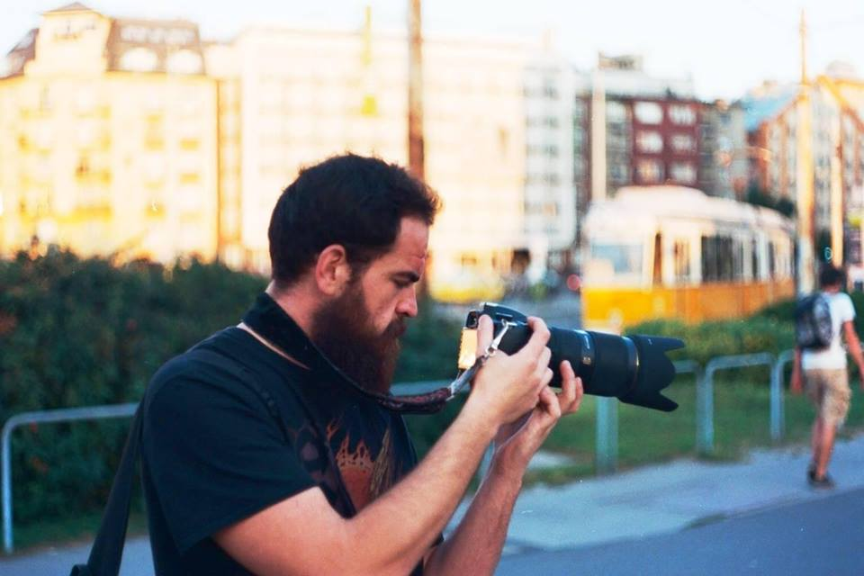

<div class="container">
  <div class="wrapper-inner">
    <figure class="details-image">
      
    </figure>

    <div class="about-content">
      <div class="inner-left">
        <header>
          <h4>András Vancsay</h4>
        </header>
      </div>

      <div class="inner-right">
        <h3>About Me</h3>
        <p>
            My curiosoty for photography started at an early age,
            while i was still attending elementary school. Back in those days,
            I was surrounded by heaps of camera gear, but i was always told I am too young to handle them.
            This didn't change until I managed to get my hands on a cheap entry level DSLR in february 2018, which changed everything.
            Following an injury  in August 2018 i devoted most of my recovery time to dive into learning photography in general.
        </p>
        <p>
            I mostly enjoyed photography as a hobbyist, learning by trial and error spending a lot of my free time just walking around Budapest, 
            taking shots of life in the city. I am always trying to find new and exciting scenes, and challenging situations. 
            My favorite challenge so far has been going back to the basics with analogue photography. 
            There is just something different - and better in my opinion - about shooting on such a tried and true, yet outdated medium. 
            Film has a different quality about it, which can not be reproduced by digital, but that is not to say digital is not superior to film in just about any way, from a working photographers perspective. 
            At the end of the day, it's the shot that matters, not the equipment.
        </p>
        <p>
            I enjoy shooting landscapes, portraits, concerts, and the street in general.
            Most of my photography is about the city of Budapest, her bridges, the danube, my dear friends, fellow bands in concert, and documenting my walks on the different streets of Budapest.
        </p>
        <p>
            Feel free to <button mat-button routerLink="/contact" class="contactButton">Contact</button> me about photography services, I am looking forward to working with new people on exciting projects.
        </p>
      </div>
    </div>
  </div>
</div>
